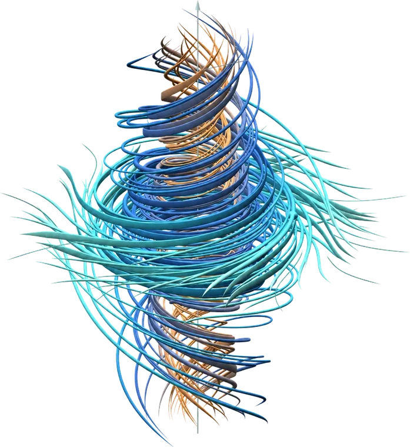

DS3 Projects · UC San Diego · Fall 2026
The Real Singularity
What physics AI can and can't do
In September 2026, OpenAI announced that its AI, in an 88-hour run, had settled one of the Millennium Prize Problems: a $1,000,000 question about the equations of fluid flow.1 Those are the Navier–Stokes equations, which describe how a fluid with velocity \(\mathbf{u}\) and pressure \(p\) moves:

While we were building this site, an Anthropic researcher announced that he and Claude had proved the Riemann hypothesis, in 17 million lines of Lean that no one has yet read in full.3
How physics is really done with AI
Have you wondered how AI actually solves physics problems?
Headlines like that one are about proofs on paper. Day to day, scientists and engineers use AI for physics in a more down-to-earth way: training neural networks to predict how fluids, traffic or materials behave. One popular approach is the physics-informed neural network, or PINN, which learns from the laws of physics themselves instead of from piles of worked examples.
We built PINNs, tested them on two problems where we know the exact answers, and checked every result. Along the way we found where they are truly impressive, where they fail, and why the failures are hard to see.
Our thread
An AI's own score is not the same as being right.
PINNs fail in a systematic way: the number they train on can look excellent while the answer is wrong. Someone has to set up the question, check the score against something independent, and decide what the answer means. For now, that person is a part of the loop nothing in our experiments could replace.
At the end we come back to AI-written math proofs, a very different tool, and find the same theme continuing there.
Step 1 · Neural networks
From one neuron to a network
A neuron is a line, then a bend
A single neuron takes some numbers \(\mathbf{x}\), multiplies them by weights, adds a bias, and passes the result through a fixed curve \(\sigma\) called the activation function:
The inside, \(A\mathbf{x} + b\), is an ordinary linear equation. The bend \(\sigma\) is what matters. Without it, stacking layers gets you nowhere, because a linear function of a linear function is still linear:
With a non-linear \(\sigma\) in between, layers can build up curves, bumps and steep slopes that no straight line can. Our networks use \(\sigma(z) = \tanh z\), a smooth S-shaped curve.
A network is many neurons in layers
A layer runs many neurons side by side, so \(A\) becomes a matrix and \(b\) a vector. Feeding each layer's output \(h_k\) into the next gives the whole network. Ours takes a position \(x\) and a time \(t\) and returns one number, \(u\):
It has 8 layers of 20 neurons. All the entries of the \(A\)'s and \(b\)'s together, called the parameters \(\theta\), number 3,021. They are the knobs that training turns.
See the code: our network in PyTorch
Abridged from pinn/model.py in our repository.
import torch
import torch.nn as nn
class PINN(nn.Module):
"""(x, t) -> u: `depth` hidden layers of `width` neurons, tanh in between."""
def __init__(self, depth=8, width=20):
super().__init__()
layers = [nn.Linear(2, width), nn.Tanh()] # A_1 [x, t] + b_1, then sigma
for _ in range(depth - 1):
layers += [nn.Linear(width, width), nn.Tanh()] # A_k h + b_k, then sigma
layers.append(nn.Linear(width, 1)) # A_9 h + b_9: one number out
self.net = nn.Sequential(*layers)
def forward(self, x, t):
return self.net(torch.cat([x, t], dim=1))
Scoring a guess: root mean squared error
To train a network, we need a single number that says how wrong it is. When the right answers \(y_i\) are known, the usual choice is the root mean squared error: square each miss, average, take the square root.
Squaring makes big misses count much more than small ones, and the square root puts the score back in the same units as \(u\). For example, misses of 0.1, 0.2 and 0.2 give \(\sqrt{(0.01 + 0.04 + 0.04)/3} \approx 0.17\). In practice we minimize the mean squared error (MSE), the same thing without the root: whatever makes one smaller makes the other smaller.
Turning the knobs: gradient descent
Picture the error as a landscape over all 3,021 knobs, and training as walking downhill. The gradient \(\nabla_\theta L\) points in the direction where the loss \(L\) rises fastest, so each step goes the other way:
The learning rate \(\eta\) sets the step size. Too small and training crawls; too large and it overshoots the bottom and can fly off. The computer gets the gradient exactly, for all knobs at once, by applying the chain rule backwards through the layers (backpropagation). Try it on one knob:
This curve is \(L(\theta) = (\theta - 1)^2\), so each step multiplies the distance to the bottom by \(1 - 2\eta\). Below \(\eta = 0.5\) it walks straight in, between 0.5 and 1 it zig-zags in, and above 1 it flies off. The step-by-step simulator in Beat 2 is gradient descent in disguise and has the same kind of speed limit.
Step 2 · How a PINN learns physics
The score is the physics
Our problem: Burgers' equation
Beat 1 is built on Burgers' equation, the simplest cousin of Navier–Stokes: one dimension, no pressure. It keeps the two ingredients that make fluids hard, a term that makes the flow steepen itself and a term that smooths it out:
- \(u(x, t)\) is the speed of the flow at position \(x\) and time \(t\); \(u_t\), \(u_x\), \(u_{xx}\) are its rates of change in time and space.
- \(u\,u_x\): faster parts catch up with slower ones, so the wave steepens into a cliff, called a shock.
- \(\nu\,u_{xx}\): viscosity, which rounds the cliff off. We use \(\nu = 0.01/\pi\), \(0.003/\pi\) and \(0.001/\pi\); the smaller \(\nu\), the sharper the cliff.
Beat 2 uses a different equation, Allen–Cahn, \(u_t = u_{xx} + \mu\,(u - u^3)\), and the same recipe.
The PINN's score: how badly it breaks the rules
An ordinary network is scored with RMSE against answers someone already computed. A PINN has no answers to copy. Instead it plugs its own guess \(u_\theta\) into the equation. Because \(u_\theta\) is a formula, the computer can take its derivatives exactly, with the same backpropagation machinery. Whatever is left over is the residual, which is zero only where the equation holds:
The loss adds up three mean squared errors: the residual at 10,000 random collocation points inside the domain, the starting state at 100 points, and the ends of the road at 100 times each:
Then it is gradient descent as in Step 1. We use Adam for 2,000 steps, a version that adapts the step size for each knob, then L-BFGS for up to 15,000 steps, which also estimates how the landscape curves.
See the code: the residual, the loss and the training loop
Abridged from pinn/losses.py and pinn/train.py.
def grad(out, inp):
# exact derivative of the network's output with respect to an input
return torch.autograd.grad(out, inp, torch.ones_like(out), create_graph=True)[0]
def pde_residual(model, x, t, nu):
"""r = u_t + u * u_x - nu * u_xx at the points (x, t)."""
x = x.clone().requires_grad_(True)
t = t.clone().requires_grad_(True)
u = model(x, t)
u_x, u_t = grad(u, x), grad(u, t)
u_xx = grad(u_x, x)
return u_t + u * u_x - nu * u_xx
def loss(model, pts, nu):
pde = torch.mean(pde_residual(model, pts["x_col"], pts["t_col"], nu) ** 2)
ic = torch.mean((model(pts["x_ic"], pts["t_ic"]) - pts["u_ic"]) ** 2) # u_ic = -sin(pi x)
t_bc = pts["t_bc"]
bc = (torch.mean(model(-torch.ones_like(t_bc), t_bc) ** 2)
+ torch.mean(model(torch.ones_like(t_bc), t_bc) ** 2))
return 0.1 * (pde + ic + bc)
# training: gradient descent with Adam, then L-BFGS
opt = torch.optim.Adam(model.parameters(), lr=1e-3)
for step in range(2000):
opt.zero_grad()
L = loss(model, pts, nu)
L.backward() # backpropagation: the gradient for all 3,021 knobs
opt.step() # theta <- theta - (step) * gradient
How we check it: the error against the truth
For our two problems the exact answer \(u\) is known, so we can measure what the loss cannot: how far the PINN is from the truth over the whole grid. Every percentage on this site is this relative \(L^2\) error:
Notice what the loss measures: how well the answer follows the rule at the points we checked, not how close it is to the truth. Most of the time the two agree. Our two beats show what happens when they don't, and in a real problem there is no exact \(u\) to compare against.
Step 3 · What we tested
Two problems, two kinds of failure
Each beat opens with a short story, then lets you try the demos yourself. Start with Beat 1.
Beat 1
The wall of brake lights
\(u_t + u\,u_x = \nu\,u_{xx}\)
Freeway traffic slows into a sudden wall of brake lights. Can a PINN that only knows the rules of traffic predict it?
Beat 2
Balls in bowls, balls on hilltops
\(u_t = u_{xx} + \mu\,(u - u^3)\)
A rod of tiny magnets settles into resting shapes. Some are stable like a ball in a bowl; others balance on a hilltop.
Step 4 · Back to the headline
The same theme, one level up
OpenAI's result is a proof, not a simulation, and an AI that writes proofs is a very different tool from a PINN. We are not saying it will fail the way PINNs do. What carries over is the theme: a machine check that passes is not the same as an answer people have confirmed.
OpenAI released its proof together with a version for Lean, software that checks every step of a proof mechanically. In October, mathematicians at Cambridge showed that the Lean version checks a slightly different statement from the proof written for people: in one step, the written proof uses four derivatives where the checked one needs five.2 They do not claim the result is false. But passing the computer check did not, by itself, confirm the proof people read. The Clay Mathematics Institute, which awards the prize, requires peer review by mathematicians first, and has not awarded it.1
| Our PINNs | AI-written proofs | |
|---|---|---|
| The machine's own check | The training loss: how well the answer follows the equation | Lean accepts every step |
| What that check can't tell you | Whether the answer is close to the truth | Whether what was checked is what we meant |
| Who closes the gap | A person comparing with an exact answer or a simulator | Mathematicians reading it, then peer review |
Conclusion
What AI really changes, and what it doesn't
Truly revolutionary
- A trained PINN answers instantly and needs no answer key, just the physics.
- It can aim at unstable states that classical simulation can never reach.
- AI systems can now produce long, machine-checkable arguments on research-level problems.
Often overstated
- That a great training score means a right answer.
- That AI replaces the traditional methods: on sharp changes, a decades-old solver still wins.
- That a passing machine check settles what a result means.
AI is a remarkable new instrument for physics and math. But in both, the loop still runs through a person: someone has to decide what to ask, check the AI's score against something independent, and interpret what the answer means. That is the real singularity we found: not the moment AI stops needing us, but the places where it clearly still does.
Sources
- Navier–Stokes priority controversy, Wikipedia (claim, 88-hour run, Clay Institute's position); CNBC, Sept 9, 2026.
- Bastounis, Circelli and Hansen, "Navier-Stokes lost in translation: Why Lean verification of AI autoformalisation does not guarantee correct natural language proofs", Oct 2026; see also TechCrunch, Oct 8, 2026.
- Al Jazeera, Nov 21, 2026; Washington Post, Nov 20, 2026. The claim had not been verified when we wrote this.
- The network size (8 layers of 20) follows Raissi, Perdikaris and Karniadakis, "Physics-informed neural networks", J. Comput. Phys. 378 (2019), 686–707.